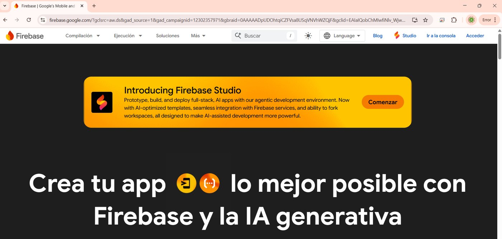
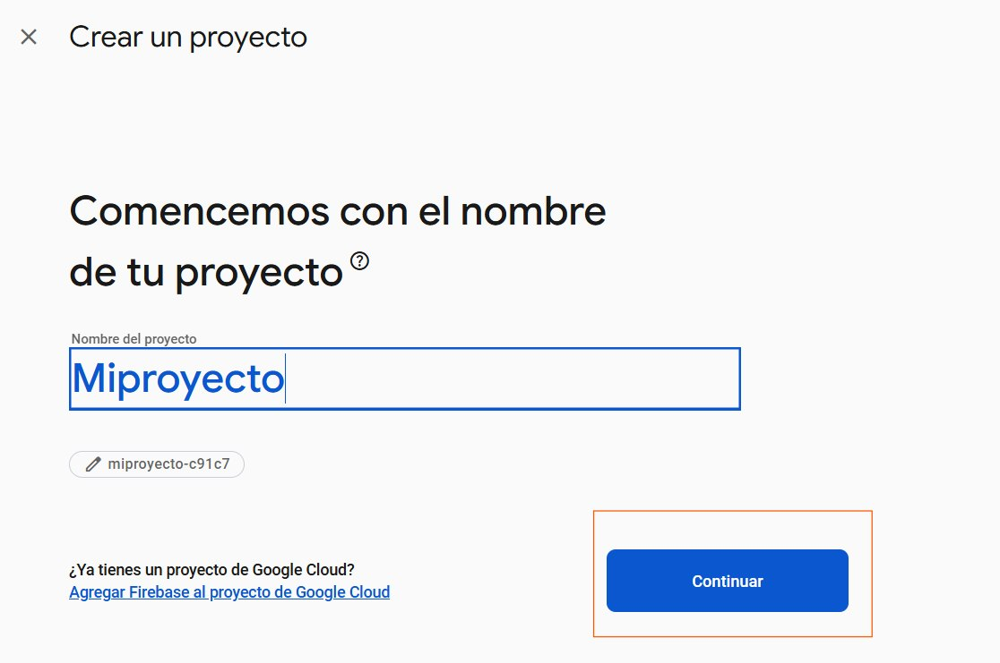
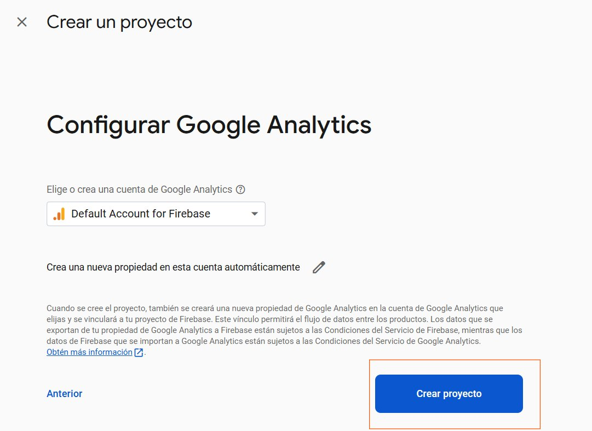
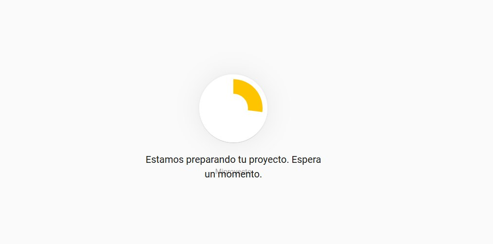
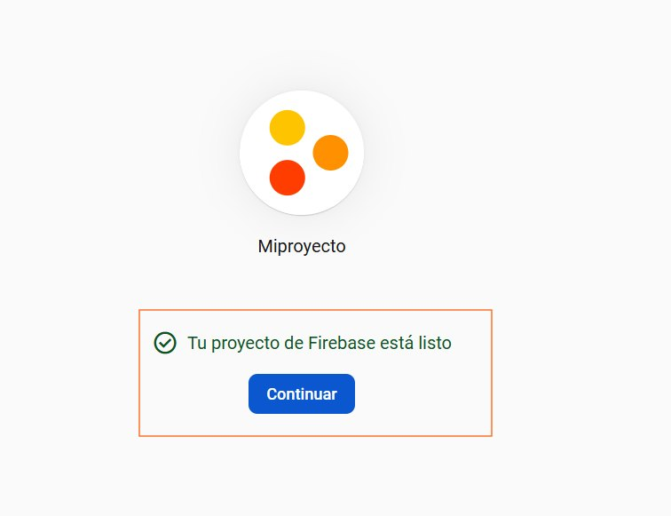
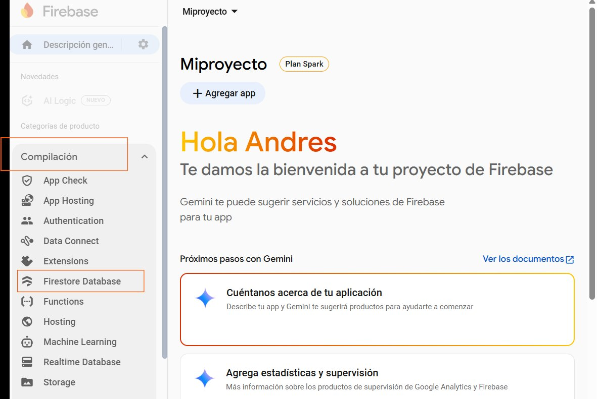
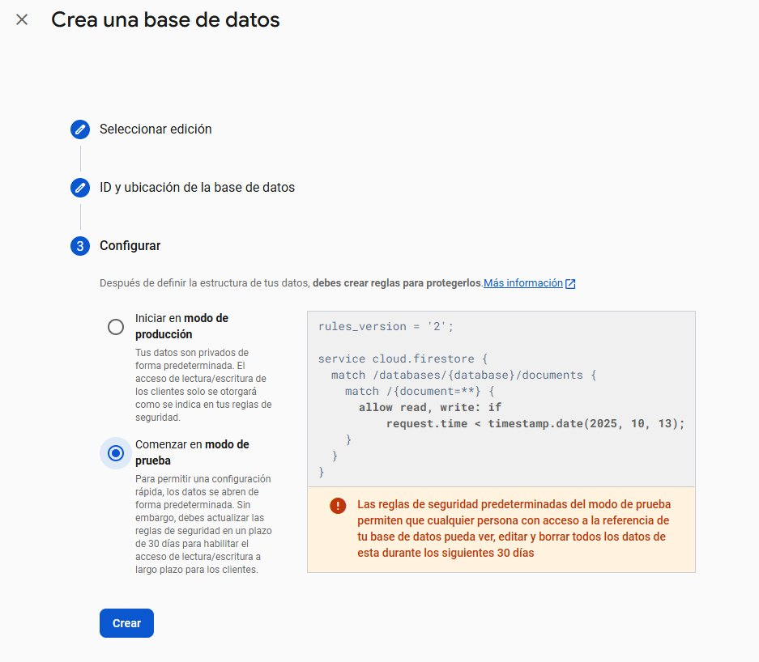
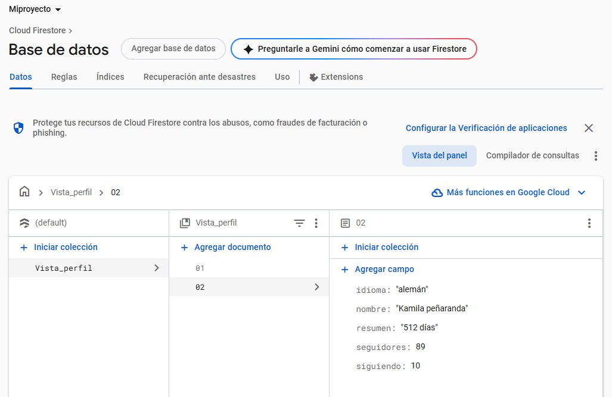

Crea la carta del Restaurante ABC desde cero, comprueba los documentos y filtros, y distingue tu práctica individual del carrito compartido de la clase.
Este es el recorrido que debes seguir de principio a fin. No necesitas programar ni configurar el carrito de clase. Tu meta es crear tu propia colección carta con 8 documentos, comprobar dos filtros y después usar el carrito compartido cuando el docente lo indique.
Tu proyecto Firebase sirve para practicar documentos. El carrito de clase usa el proyecto del docente, ya preparado con 24 productos y conectado a Supabase. Tus 8 documentos no aparecen automáticamente en ese carrito. No ejecutes la semilla, las Rules del carrito ni el SQL de productos 9–24: esas son tareas del docente.
abc-tu-primer-nombre; no uses datos privados.carta, en minúsculas y sin espacios.plato_id: el primero es un identificador técnico de Firestore y el segundo es el número de nuestro menú.carta / [ID automático] y el control Añadir campo.Por cada fila pulsa Añadir campo: escribe el nombre, escoge el tipo y escribe el valor. No pongas comillas alrededor de los textos. Para array, añade cada elemento como texto separado.
plato_id | número | 1
nombre | texto | Ajiaco santafereño
precio_actual | número | 28000
categoria | texto | fuerte
descripcion | texto | Sopa bogotana de pollo con tres papas y guascas, servida con crema de leche y alcaparras aparte.
alergenos | array | gluten ; lácteos
foto | texto | ajiaco.jpgplato_id es el número 1, no el texto “1”.precio_actual quedó como texto, bórralo y créalo otra vez como número. El tipo también es parte del dato.En la colección carta pulsa Añadir documento, deja el ID automático, añade los campos y guarda. En todos se repiten plato_id, nombre, precio_actual, categoria y descripcion; agrega solamente los campos especiales indicados.
plato_id | número | 2
nombre | texto | Bandeja paisa
precio_actual | número | 34000
categoria | texto | fuerte
descripcion | texto | Fríjoles, arroz, carne molida, chicharrón, huevo frito, arepa y aguacate.
alergenos | array | huevo
extras_disponibles | array | arepa adicional ; aguacate adicional ; chorizoplato_id | número | 3
nombre | texto | Sancocho de gallina
precio_actual | número | 30000
categoria | texto | fuerte
descripcion | texto | Sancocho trifásico con gallina, papa criolla, mazorca y yuca.plato_id | número | 4
nombre | texto | Limonada de coco
precio_actual | número | 9000
categoria | texto | bebida
descripcion | texto | Limonada natural batida con leche de coco.
alergenos | array | lácteosplato_id | número | 5
nombre | texto | Arepa de choclo
precio_actual | número | 7500
categoria | texto | entrada
descripcion | texto | Arepa dulce de choclo con queso campesino.
vegetariano | booleano | trueplato_id | número | 6
nombre | texto | Sobrebarriga al horno
precio_actual | número | 36000
categoria | texto | fuerte
descripcion | texto | Sobrebarriga horneada en salsa criolla, con papa salada y ensalada.plato_id | número | 7
nombre | texto | Postre de natas
precio_actual | número | 11000
categoria | texto | postre
descripcion | texto | Postre tradicional de natas de leche.
alergenos | array | lácteos ; huevoplato_id | número | 8
nombre | texto | Tamal tolimense
precio_actual | número | 22000
categoria | texto | fuerte
descripcion | texto | Tamal de cerdo y pollo envuelto en hoja de plátano, servido en el desayuno.
alergenos | array | gluten
disponible_desde | texto | 06:00
disponible_hasta | texto | 11:00
nota_disponibilidad | texto | Solo se sirve en el horario de desayuno.carta, con IDs automáticos distintos y plato_id del 1 al 8.foto y alergenos.extras_disponibles.vegetariano como booleano.La conclusión no es “un documento permite desorden”. Cada ficha guarda lo que esa ficha necesita, sin columnas vacías para los otros productos.
vegetariano es igual a true. Debe aparecer únicamente Arepa de choclo.categoria es igual a fuerte. Deben aparecer Ajiaco, Bandeja, Sancocho, Sobrebarriga y Tamal."true" como texto. Bórralo y vuelve a crearlo eligiendo tipo booleano.carta y sus 8 documentos.extras_disponibles o disponible_desde.carta tiene 8 documentos.vegetariano == true.Es el contenedor de cosas del mismo tipo. Hoy es carta: dentro están todos los productos del restaurante.
Un documento es una ficha, por ejemplo “Arepa de choclo”. Cada campo es un dato de esa ficha: precio_actual, vegetariano o alergenos.
La ficha del producto se consulta completa: nombre, precio, alérgenos y opciones. Por eso evaluamos un documento. No significa que NoSQL sea mejor siempre; el pedido confirmado sigue en SQL porque necesita reglas y consistencia.
Vas a crear una base de datos de documentos en la nube de Google, y a meter dentro el modelo de una aplicación que ya usas. Son diez pasos y no se instala nada.
Ni tarjeta, ni instalación, ni código.
JOIN. Aquí lo guardas ya junto, tal como la pantalla lo va a pedir. Eso es una ventaja para leer y una desventaja para cambiar.Busca Firebase en Google, o ve directo a firebase.google.com.
Es la nube de Google pensada para quien hace aplicaciones móviles. Nosotros vamos a usar una sola pieza de todo lo que ofrece: Firestore, que es su base de datos de documentos.

Acceder → escribe tus credenciales de Gmail.
No hace falta crear nada nuevo: si tienes correo de Google, ya tienes cuenta.
Arriba a la derecha, Ir a la consola.
Ahí es donde viven los proyectos. Si es tu primera vez, estará vacío.
Crear un proyecto → ponle un nombre y continuar.
Un nombre que reconozcas: curso-nosql, o el de la aplicación que vayas a modelar más abajo.

Te ofrece Google Analytics. Es gratis, y para este ejercicio no hace falta: puedes desactivarlo y seguir.
Luego continuar otra vez.

Tarda menos de un minuto. Está reservando el espacio de tu proyecto en la infraestructura de Google.

Aparece la confirmación. Continuar, y caes en el panel del proyecto.

En el menú de la izquierda, Compilación (o Build), y ahí dentro Firestore Database.
La primera vez te lo ofrece con un botón grande: Crear base de datos.

us-east1 (South Carolina).Las reglas de Firestore controlan las solicitudes de aplicaciones web y móviles. En modo de producción, esas aplicaciones no reciben permiso abierto por defecto.
Puedes crear documentos desde la consola porque eres dueño del proyecto: eso usa tus permisos de administración, no abre la base al público. Hoy no cambies las reglas a “allow all”; no estamos conectando una aplicación de estudiantes a esta base.

Ya tienes la base. Ahora Iniciar colección.
Y aquí empieza el ejercicio de verdad: la colección no es inventada. Modela una aplicación que uses en el móvil —Duolingo, Spotify, Rappi, Strava, la que quieras— y guarda ahí lo que esa aplicación necesitaría saber de ti.

Crear la colección es la mitad. La otra es mostrar y explicar una elección: documentos, tablas o una combinación. No redactes una página; selecciona una opción y defiéndela en 30 segundos.
Es la plataforma: reúne autenticación, hosting, almacenamiento, funciones y bases de datos. No es sinónimo de una sola base.
En esta sesión Firebase aporta dos piezas: Authentication, que identifica el navegador, y Firestore, donde vive el carrito.
Es una base de datos de documentos. Una colección agrupa documentos; cada documento guarda campos, arreglos u objetos. No hay JOIN automático: se diseña pensando en lo que la aplicación necesita leer y actualizar junta.
La configuración web identifica el proyecto; las Security Rules deciden qué puede leer o escribir cada navegador.
La carta puede ser de lectura pública. El carrito no: la app debe iniciar sesión anónima y guardar un owner_uid; las reglas permiten leer o modificar un carrito únicamente a su dueño. Nunca uses allow read, write: if true en producción.
Usa Firebase Studio y Gemini para producir el esqueleto de la app. Gemini acelera interfaz y código repetitivo; ustedes siguen siendo responsables del modelo, las reglas y la prueba de seguridad.
Crea una aplicación web responsive llamada Restaurante ABC.
Muestra una carta desde Firestore, permite agregar platos a un carrito
por usuario anónimo y sincroniza el carrito entre dos pestañas.
Usa Firebase Authentication anónima y Firestore. Cada carrito debe incluir
owner_uid y las reglas deben impedir que otro usuario lea o escriba ese carrito.
No incluyas claves secretas ni service-role keys en el navegador.
Al confirmar, llama solamente a la función RPC registrar_pedido de Supabase.
Envía plato_id y cantidad; el servidor calcula el precio, crea pedido,
líneas y pago. Después muestra por separado: venta confirmada y limpieza
del carrito. No afirmes una transacción única entre Firestore y PostgreSQL.Después de generar, revisa tres cosas antes de ejecutar: qué colección lee, qué regla habilita la escritura y qué función RPC llama. Un código que compila no es todavía una aplicación segura.
El navegador puede usar la Project URL y la publishable key. Esas identifican la aplicación, no conceden poderes de administrador. La puerta correcta es una función RPC limitada, no INSERT libre contra pedido, pago o linea_pedido.
async function confirmarPedido(lineas, nombre, telefono, mesa) {
const respuesta = await fetch(
`${SUPABASE_URL}/rest/v1/rpc/registrar_pedido`,
{
method: "POST",
headers: {
apikey: SUPABASE_PUBLISHABLE_KEY,
Authorization: `Bearer ${SUPABASE_PUBLISHABLE_KEY}`,
"Content-Type": "application/json"
},
body: JSON.stringify({
p_nombre: nombre,
p_telefono: telefono,
p_mesa: mesa,
p_lineas: lineas.map(({ plato_id, cantidad }) => ({ plato_id, cantidad }))
})
}
);
if (!respuesta.ok) throw new Error("La base rechazó la venta");
return respuesta.json();
}Mesa, platos, cantidades, precio vigente, total, pedido, líneas y pago. La aplicación nunca envía el precio que desea cobrar.
La secret key de Supabase, contraseñas de base de datos o una función sin permisos revisados. La publishable key solo es aceptable porque RLS y los permisos de la función limitan el acceso.
owner_uid y no puede verlo otro usuario.registrar_pedido() en Supabase.En Firestore Database → Rules, pega estas reglas solo después de que la app creada por Gemini escriba owner_uid en cada carrito y active Authentication → Anonymous.
rules_version = '2';
service cloud.firestore {
match /databases/{database}/documents {
match /carta/{platoId} {
allow read: if true;
allow write: if false;
}
match /carritos/{carritoId} {
allow create: if request.auth != null
&& request.resource.data.owner_uid == request.auth.uid;
allow read, delete: if request.auth != null
&& resource.data.owner_uid == request.auth.uid;
allow update: if request.auth != null
&& resource.data.owner_uid == request.auth.uid
&& request.resource.data.owner_uid == request.auth.uid;
}
}
}Que una clave web pública no equivale a acceso público. Un navegador anónimo puede operar su carrito; no puede leer ni escribir el de otra persona. Prueba permitir y negar en el simulador de Rules antes de compartir el enlace.
El paso 10 explica la mecánica de crear una colección. En esta sesión, antes de modelar una aplicación propia, todos construyen la misma colección: carta. Así se puede comparar el mismo caso con la base relacional de la sesión 9 y usarlo después en el carrito.
carta.plato_id que aparece abajo.plato_id, nombre, precio_actual, categoria y descripcion.Al terminar deben verse 8 documentos dentro de carta. Abre Tamal, Bandeja y Arepa: sus campos diferentes son la evidencia del esquema flexible.
Repite la misma idea con una colección de una aplicación real que uses. Esa extensión no reemplaza carta: el caso ABC es el lenguaje común para el reto, la comparación y la compra.
Un dato se embebe cuando se consulta y cambia junto con el plato. Si tendrá vida, permisos o actualizaciones propias, se discute como referencia en el reto de receta.
| plato_id | nombre · precio · categoría | campo que no todos comparten |
|---|---|---|
| 1 | Ajiaco santafereño · 28000 · fuerte | alergenos: [gluten, lácteos], foto |
| 2 | Bandeja paisa · 34000 · fuerte | alergenos: [huevo], extras_disponibles |
| 3 | Sancocho de gallina · 30000 · fuerte | solo los campos comunes |
| 4 | Limonada de coco · 9000 · bebida | alergenos: [lácteos] |
| 5 | Arepa de choclo · 7500 · entrada | vegetariano: true |
| 6 | Sobrebarriga al horno · 36000 · fuerte | solo los campos comunes |
| 7 | Postre de natas · 11000 · postre | alergenos: [lácteos, huevo] |
| 8 | Tamal tolimense · 22000 · fuerte | disponible_desde, disponible_hasta, nota_disponibilidad |
Filtra por vegetariano == true: debe quedar Arepa. Filtra por categoria == fuerte: deben quedar los platos fuertes. Si no coincide, revisa tipo y nombre del campo, no inventes una corrección en el carrito.
Esta sección no es una tarea adicional para estudiantes. Es la lista de control que vuelve real la demostración de la segunda mitad de la sesión.
apiKey, authDomain, projectId y appId.carta con los ocho platos.carrito-abc-firebase.html que se va a publicar. La configuración web identifica el proyecto; la protección viene de Authentication y Rules, no de ocultarla.registrar_pedido().El HTML del carrito muestra un panel de configuración cuando no recibe datos de Firebase. Esa configuración se guarda solo en el navegador que la escribió: no convierte por sí sola el enlace publicado en un carrito de clase. Para hacerlo compartible hay que incorporar la configuración web del proyecto real en el recurso publicado y ejecutar la prueba anterior. Nunca compartas una secret key, una service-role key ni una contraseña de base de datos.
El recurso acepta la configuración web de Firebase por parámetros de URL: ?fbApiKey=…&fbProjectId=…&fbAuthDomain=…&fbAppId=…. Supabase ya está indicado en el recurso. Una configuración escrita manualmente en el panel queda solo en ese navegador; el enlace con los cuatro valores de Firebase permite abrir el proyecto correcto en cada navegador de la clase. Esos valores web no son una secret key: las reglas y el uid anónimo siguen siendo obligatorios.
La configuración web de Firebase y la conexión publicable de Supabase ya están incorporadas en carrito-abc-firebase.html; los estudiantes abren el enlace directo. Los parámetros de URL quedan solo como mecanismo de recuperación para el docente. Antes de usarlo con el grupo, conserva la prueba de dos pestañas, autenticación anónima, Rules y una compra de prueba indicada arriba.
En la práctica individual crea y explica los 8 documentos base. El carrito de clase usa 24 productos para que el patrón sea visible con una carta más real: entradas, sopas, fuertes, bebidas, postres y panadería, con alérgenos, opciones, horarios y propiedades que solo aplican a algunos platos.
La fuente de la carta está en carta-abc.json. La herramienta docente sembrar-carta-firebase.html la carga en Firestore una vez que el docente revisó sus Rules.
Si el carrito muestra los productos 9–24, PostgreSQL también debe conocerlos; de lo contrario registrar_pedido() debe rechazar la compra. En la base del docente, ejecuta una vez el bloque siguiente en SQL Editor. Está pensado para el esquema abc_demo visto en la clase; si tu selector de esquema dice public, reemplaza únicamente ese prefijo.
INSERT INTO abc_demo.plato (plato_id, nombre, precio_actual) VALUES
(9, 'Empanadas de pipián', 8500),
(10, 'Patacones con hogao', 10000),
(11, 'Cazuela de mariscos', 42000),
(12, 'Trucha al ajillo', 39000),
(13, 'Lomo al trapo', 48000),
(14, 'Pollo sudado', 27000),
(15, 'Ensalada campesina', 18000),
(16, 'Sopa de guineo', 16000),
(17, 'Jugo de lulo', 7000),
(18, 'Chocolate santafereño', 8500),
(19, 'Café colombiano', 6000),
(20, 'Avena casera', 7500),
(21, 'Brevas con arequipe', 12000),
(22, 'Oblea bogotana', 9000),
(23, 'Helado de curuba', 10000),
(24, 'Pan de bono recién horneado', 5000)
ON CONFLICT (plato_id) DO UPDATE
SET nombre = EXCLUDED.nombre,
precio_actual = EXCLUDED.precio_actual;
SELECT COUNT(*) AS productos_en_sql FROM abc_demo.plato;El conteo debe ser al menos 24 y cada plato_id 1–24 debe tener el mismo precio en Firestore y PostgreSQL. Así el documento resuelve la experiencia de lectura y SQL sigue siendo la fuente de verdad al cobrar.
Como la ampliación asigna IDs 9–24 de forma explícita, ejecuta también esta línea después del INSERT. Evita que la siguiente inserción automática intente reutilizar el ID 9.
SELECT setval(
pg_get_serial_sequence('abc_demo.plato', 'plato_id'),
(SELECT MAX(plato_id) FROM abc_demo.plato),
true
);Si tu tabla está en public, cambia ambos prefijos abc_demo.
Diseño y Gestión de Bases de Datos con SQL · Universidad de los Andes · Colsubsidio